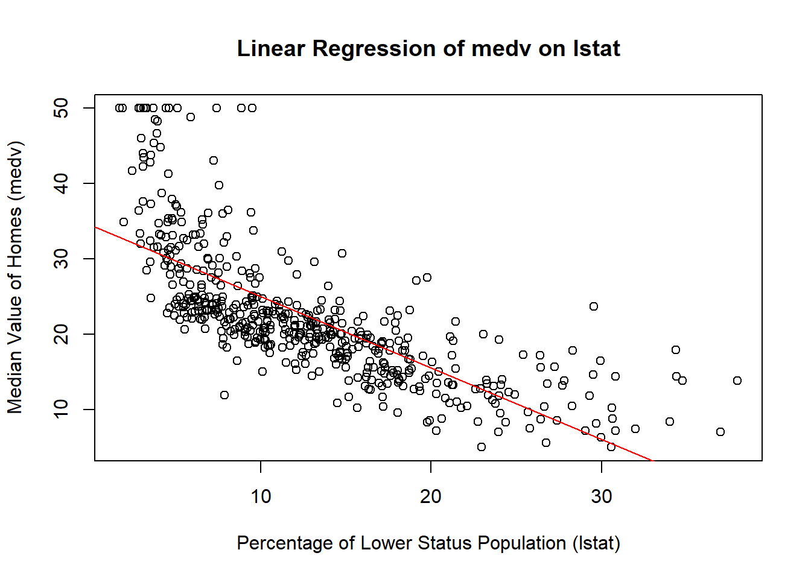
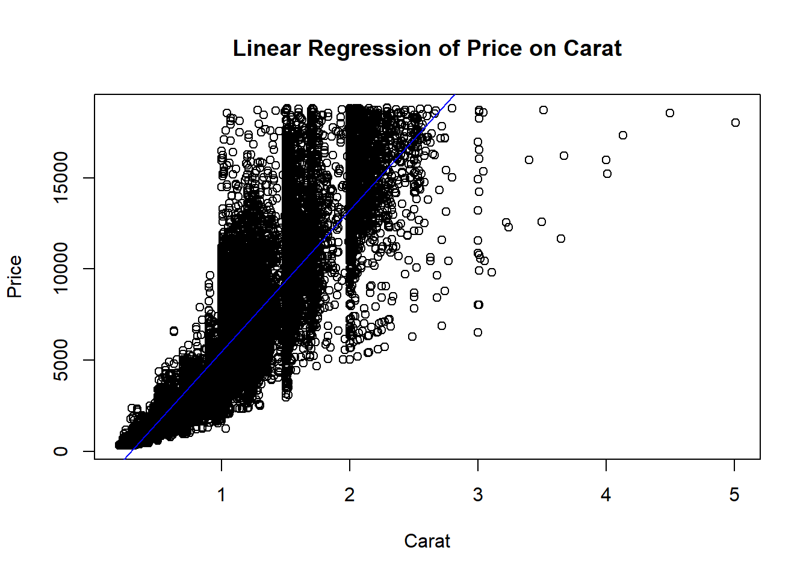

The Boston dataset, included in the MASS package, contains information about housing in the Boston area, collected by the U.S. Census Service. It includes 506 observations on 14 variables, encompassing various socio-economic and housing factors impacting home values and quality of life in different neighborhoods.
Key variables: - crim: Crime rate per capita by town. - zn: Proportion of residential land zoned for large lots. - indus: Proportion of non-retail business acres per town. - chas: Charles River dummy variable (1 if tract bounds river; 0 otherwise). - nox: Nitrogen oxides concentration. - rm: Average number of rooms per dwelling. - age: Proportion of owner-occupied units built before 1940. - dis: Distances to Boston employment centers. - rad: Index of accessibility to radial highways. - tax: Property tax rate per $10,000. - ptratio: Pupil-teacher ratio by town. - black: 1000(Bk - 0.63)^2 where Bk is the proportion of Black residents by town. - lstat: Percentage of lower status population. - medv: Median value of owner-occupied homes in $1000s.
Code
# Load necessary packages and data# install.packages("MASS")library(MASS)data("Boston")# Display the first few rows of the datasethead(Boston)
The MASS package contains the Boston dataset. The head() function shows the initial rows, providing a quick overview of the dataset’s structure and variables.
1.2 Descriptive Statistics
Overview and Importance
Descriptive statistics provide a summary of the dataset’s main features. This step is crucial in understanding the data’s central tendencies, dispersion, and overall distribution. Before diving into more complex analyses, it’s essential to identify any potential outliers or anomalies that could affect your results.
Calculating Descriptive Statistics
Code
# Summary statistics for the datasetsummary(Boston)
crim zn indus chas
Min. : 0.00632 Min. : 0.00 Min. : 0.46 Min. :0.00000
1st Qu.: 0.08205 1st Qu.: 0.00 1st Qu.: 5.19 1st Qu.:0.00000
Median : 0.25651 Median : 0.00 Median : 9.69 Median :0.00000
Mean : 3.61352 Mean : 11.36 Mean :11.14 Mean :0.06917
3rd Qu.: 3.67708 3rd Qu.: 12.50 3rd Qu.:18.10 3rd Qu.:0.00000
Max. :88.97620 Max. :100.00 Max. :27.74 Max. :1.00000
nox rm age dis
Min. :0.3850 Min. :3.561 Min. : 2.90 Min. : 1.130
1st Qu.:0.4490 1st Qu.:5.886 1st Qu.: 45.02 1st Qu.: 2.100
Median :0.5380 Median :6.208 Median : 77.50 Median : 3.207
Mean :0.5547 Mean :6.285 Mean : 68.57 Mean : 3.795
3rd Qu.:0.6240 3rd Qu.:6.623 3rd Qu.: 94.08 3rd Qu.: 5.188
Max. :0.8710 Max. :8.780 Max. :100.00 Max. :12.127
rad tax ptratio black
Min. : 1.000 Min. :187.0 Min. :12.60 Min. : 0.32
1st Qu.: 4.000 1st Qu.:279.0 1st Qu.:17.40 1st Qu.:375.38
Median : 5.000 Median :330.0 Median :19.05 Median :391.44
Mean : 9.549 Mean :408.2 Mean :18.46 Mean :356.67
3rd Qu.:24.000 3rd Qu.:666.0 3rd Qu.:20.20 3rd Qu.:396.23
Max. :24.000 Max. :711.0 Max. :22.00 Max. :396.90
lstat medv
Min. : 1.73 Min. : 5.00
1st Qu.: 6.95 1st Qu.:17.02
Median :11.36 Median :21.20
Mean :12.65 Mean :22.53
3rd Qu.:16.95 3rd Qu.:25.00
Max. :37.97 Max. :50.00
Code
# Specific calculations for key variablesmean_medv <-mean(Boston$medv, na.rm =TRUE)mean_medv
summary(Boston) provides a detailed overview of the dataset, including min, max, median, mean, and quartiles for each variable. Calculating means and standard deviations for medv and crim provides insights into typical home values and crime rates, along with their variability.
Interpreting Results:
Mean and Standard Deviation: The mean provides the average value, while the standard deviation indicates the spread of data around the mean. A high standard deviation relative to the mean suggests greater variability.
1.3 t-tests and ANOVA
1.3.1 t-tests
A t-test is used to compare the means of two groups to see if they are statistically significantly different from each other. For instance, you might want to test whether homes near the Charles River (chas = 1) have different median values than those further away (chas = 0).
Code
# t-test for medv based on proximity to Charles Rivert_test_result <-t.test(medv ~ chas, data = Boston)# Displaying the t-test resultt_test_result
Welch Two Sample t-test
data: medv by chas
t = -3.1133, df = 36.876, p-value = 0.003567
alternative hypothesis: true difference in means between group 0 and group 1 is not equal to 0
95 percent confidence interval:
-10.476831 -2.215483
sample estimates:
mean in group 0 mean in group 1
22.09384 28.44000
Explanation:
The formula medv ~ chas specifies that the test compares median home values (medv) between homes near (chas = 1) and not near (chas = 0) the Charles River. The output includes the t-statistic, degrees of freedom, and p-value, indicating whether the difference in means is statistically significant.
Interpreting Results:
p-value: A low p-value (typically < 0.05) suggests a significant difference in means, leading to the rejection of the null hypothesis that the means are equal.
1.3.2. ANOVA (Analysis of Variance)
ANOVA is used to determine if there are statistically significant differences between the means of three or more independent (unrelated) groups. For example, you can analyze whether median home values (medv) differ across different levels of highway accessibility (rad).
Code
# ANOVA for medv by radanova_result <-aov(medv ~factor(rad), data = Boston)# Summary of ANOVAsummary(anova_result)
Df Sum Sq Mean Sq F value Pr(>F)
factor(rad) 8 9767 1220.9 18.42 <2e-16 ***
Residuals 497 32949 66.3
---
Signif. codes: 0 '***' 0.001 '**' 0.01 '*' 0.05 '.' 0.1 ' ' 1
Explanation:
medv ~ factor(rad) treats rad as a categorical variable, analyzing the effect of accessibility to highways on home values. aov() conducts the ANOVA, and summary() provides the F-statistic and p-value.
Interpreting Results:
F-statistic: Indicates the ratio of variance between groups to variance within groups. A higher F-value suggests greater differences between group means. p-value: If the p-value is low, it indicates significant differences in means across the groups.
1.4 Simple Linear Regression
Introduction and Purpose
Simple linear regression is a method for quantifying the relationship between two continuous variables. It models the dependent variable (Y) as a linear function of the independent variable (X), allowing for predictions and insights into their relationship.
Example: Predicting Home Values
Code
# Linear regression: medv as a function of lstatlm_model <-lm(medv ~ lstat, data = Boston)# Summary of the linear modelsummary(lm_model)
Call:
lm(formula = medv ~ lstat, data = Boston)
Residuals:
Min 1Q Median 3Q Max
-15.168 -3.990 -1.318 2.034 24.500
Coefficients:
Estimate Std. Error t value Pr(>|t|)
(Intercept) 34.55384 0.56263 61.41 <2e-16 ***
lstat -0.95005 0.03873 -24.53 <2e-16 ***
---
Signif. codes: 0 '***' 0.001 '**' 0.01 '*' 0.05 '.' 0.1 ' ' 1
Residual standard error: 6.216 on 504 degrees of freedom
Multiple R-squared: 0.5441, Adjusted R-squared: 0.5432
F-statistic: 601.6 on 1 and 504 DF, p-value: < 2.2e-16
Code
# Plotting the regression lineplot(Boston$lstat, Boston$medv, main ="Linear Regression of medv on lstat",xlab ="Percentage of Lower Status Population (lstat)", ylab ="Median Value of Homes (medv)")abline(lm_model, col ="red")

Explanation:
medv ~ lstat specifies the model, predicting median home values (medv) based on the percentage of lower status population (lstat). lm() fits the model, and summary() provides detailed statistics, including coefficients, R-squared value, and p-values.
Interpreting Results:
Coefficients: The slope coefficient indicates the change in medv for a one-unit increase in lstat. The intercept represents the predicted value of medv when lstat is zero. R-squared: Measures the proportion of variance in medv explained by lstat. A higher R-squared indicates a better fit. p-value: Tests the hypothesis that the slope is different from zero. A low p-value indicates a significant relationship.
Difference-in-Differences (DID) Analysis
Introduction and Purpose
The Difference-in-Differences (DID) method estimates causal relationships, particularly in observational studies where randomized control trials are not feasible. DID compares the changes in outcomes over time between a treatment group and a control group, helping to isolate the effect of a treatment or intervention.
Example: Impact of Policy Change on Home Values
Suppose a new policy was introduced in 1975 that potentially affected home values in certain areas (e.g., stricter zoning laws). The DID approach could help estimate the policy’s impact by comparing the change in home values in affected areas (treatment group) to those in unaffected areas (control group).
Code
# Creating a hypothetical policy introduction year and treatment variableBoston$year <-sample(1970:1980, nrow(Boston), replace =TRUE)Boston$treat <-ifelse(Boston$zn >15, 1, 0) # Treatment if zn > 15head(Boston$year)
[1] 1974 1974 1975 1973 1970 1972
Code
head(Boston$treat)
[1] 1 0 0 0 0 0
Code
# DID Model: Interaction of time and treatmentdid_model <-lm(medv ~ treat * year, data = Boston)# Summary of the DID modelsummary(did_model)
Call:
lm(formula = medv ~ treat * year, data = Boston)
Residuals:
Min 1Q Median 3Q Max
-15.6472 -5.6209 -0.9158 3.0286 29.7188
Coefficients:
Estimate Std. Error t value Pr(>|t|)
(Intercept) 92.7422 270.6617 0.343 0.732
treat -218.4836 536.4792 -0.407 0.684
year -0.0366 0.1370 -0.267 0.790
treat:year 0.1149 0.2716 0.423 0.672
Residual standard error: 8.472 on 502 degrees of freedom
Multiple R-squared: 0.1564, Adjusted R-squared: 0.1514
F-statistic: 31.03 on 3 and 502 DF, p-value: < 2.2e-16
Session 2: Hands-on Exercises
The diamonds dataset from the ggplot2 package contains data on 53,940 diamonds, with attributes that can be used to explore relationships between price, quality, and physical dimensions.
Key Variable Descriptions:
carat: Weight of the diamond (continuous variable).
cut: Quality of the cut, categorized as Fair, Good, Very Good, Premium, and Ideal (ordered factor).
color: Diamond color, with grades from D (best) to J (worst) (ordered factor).
clarity: Clarity of the diamond, ranging from I1 (worst) to IF (best) (ordered factor).
depth: Total depth percentage, which is the height of a diamond divided by its average diameter (continuous variable).
table: Width of the diamond’s table expressed as a percentage of its diameter (continuous variable).
price: Price of the diamond in US dollars (continuous variable).
Code
# Load the necessary packagelibrary(ggplot2)data("diamonds")head(diamonds)
# A tibble: 6 × 10
carat cut color clarity depth table price x y z
<dbl> <ord> <ord> <ord> <dbl> <dbl> <int> <dbl> <dbl> <dbl>
1 0.23 Ideal E SI2 61.5 55 326 3.95 3.98 2.43
2 0.21 Premium E SI1 59.8 61 326 3.89 3.84 2.31
3 0.23 Good E VS1 56.9 65 327 4.05 4.07 2.31
4 0.29 Premium I VS2 62.4 58 334 4.2 4.23 2.63
5 0.31 Good J SI2 63.3 58 335 4.34 4.35 2.75
6 0.24 Very Good J VVS2 62.8 57 336 3.94 3.96 2.48
Exercise 1: Descriptive Statistics
Q1
Calculate the mean and standard deviation of the carat, price, and depth variables.
Use the summary() function to get a detailed summary of the price variable.
Determine the number of diamonds within each cut category using the table() function.
Solution
Code
# Step 1: Calculate mean and standard deviationmean_carat <-mean(diamonds$carat, na.rm =TRUE)sd_carat <-sd(diamonds$carat, na.rm =TRUE)mean_price <-mean(diamonds$price, na.rm =TRUE)sd_price <-sd(diamonds$price, na.rm =TRUE)mean_depth <-mean(diamonds$depth, na.rm =TRUE)sd_depth <-sd(diamonds$depth, na.rm =TRUE)mean_carat
[1] 0.7979397
Code
sd_carat
[1] 0.4740112
Code
mean_price
[1] 3932.8
Code
sd_price
[1] 3989.44
Code
mean_depth
[1] 61.7494
Code
sd_depth
[1] 1.432621
Code
# Step 2: Summary of the price variablesummary_price <-summary(diamonds$price)summary_price
Min. 1st Qu. Median Mean 3rd Qu. Max.
326 950 2401 3933 5324 18823
Code
# Step 3: Number of diamonds by cut categorycut_distribution <-table(diamonds$cut)cut_distribution
Fair Good Very Good Premium Ideal
1610 4906 12082 13791 21551
Exercise 2: t-test
Q2
Subset the diamonds dataset to include only diamonds with an “Ideal” or “Fair” cut.
Perform a t-test to compare the mean prices between these two cut categories.
nterpret the p-value to determine if the difference in mean prices is statistically significant.
Solution
Code
# Subset the data for Ideal and Fair cutsdiamonds_ideal_fair <-subset(diamonds, cut %in%c("Ideal", "Fair"))# Perform the t-testt_test_result <-t.test(price ~ cut, data = diamonds_ideal_fair)t_test_result
Welch Two Sample t-test
data: price by cut
t = 9.7484, df = 1894.8, p-value < 2.2e-16
alternative hypothesis: true difference in means between group Fair and group Ideal is not equal to 0
95 percent confidence interval:
719.9065 1082.5251
sample estimates:
mean in group Fair mean in group Ideal
4358.758 3457.542
Exercise 3: ANOVA
Q3
Perform an ANOVA test to assess the effect of clarity on diamond price.
If significant differences are found, conduct a Tukey’s HSD post-hoc test to identify which clarity levels differ from each other.
Solution
Code
# Perform ANOVA on price by clarityanova_result <-aov(price ~ clarity, data = diamonds)summary(anova_result)
Df Sum Sq Mean Sq F value Pr(>F)
clarity 7 2.331e+10 3.330e+09 215 <2e-16 ***
Residuals 53932 8.352e+11 1.549e+07
---
Signif. codes: 0 '***' 0.001 '**' 0.01 '*' 0.05 '.' 0.1 ' ' 1
Code
# Post-hoc test if ANOVA is significanttukey_result <-TukeyHSD(anova_result)tukey_result
Fit a simple linear regression model with carat as the predictor and price as the response variable.
Display the summary of the regression model, including coefficients, R-squared, and p-value.
Create a scatter plot of price versus carat, and add the regression line to visualize the relationship.
Solution
Code
# Fit the linear regression modellm_model <-lm(price ~ carat, data = diamonds)summary(lm_model)
Call:
lm(formula = price ~ carat, data = diamonds)
Residuals:
Min 1Q Median 3Q Max
-18585.3 -804.8 -18.9 537.4 12731.7
Coefficients:
Estimate Std. Error t value Pr(>|t|)
(Intercept) -2256.36 13.06 -172.8 <2e-16 ***
carat 7756.43 14.07 551.4 <2e-16 ***
---
Signif. codes: 0 '***' 0.001 '**' 0.01 '*' 0.05 '.' 0.1 ' ' 1
Residual standard error: 1549 on 53938 degrees of freedom
Multiple R-squared: 0.8493, Adjusted R-squared: 0.8493
F-statistic: 3.041e+05 on 1 and 53938 DF, p-value: < 2.2e-16
Code
# Create a scatter plot and add the regression lineplot(diamonds$carat, diamonds$price, main ="Linear Regression of Price on Carat",xlab ="Carat", ylab ="Price")abline(lm_model, col ="blue")

Session 3: Wrapping Up and Q&A
In this session, we’ve explored key statistical methods, including descriptive statistics, t-tests, ANOVA, and simple linear regression, using the Boston dataset. These methods are essential for analyzing and interpreting data in various fields.
Continue practicing these techniques with different datasets and variables to strengthen your understanding and analytical skills.
Q&A: Please share any questions or challenges encountered during the exercises. Let’s discuss solutions and clarify concepts!
---title: "EPPS Math Coding Camp"subtitle: "Introduction to Linear Regression"author: "Dohyo Jeong"date: "August 13, 2024"format: html: toc: true toc-depth: 3 code-fold: show code-tools: true highlight-style: github---```{r setup, include=FALSE}knitr::opts_chunk$set(echo = TRUE)```# Session 1: Introduction to Linear Regression## 1.1 Introduction and Data Overview### Dataset: Boston from the MASS PackageThe Boston dataset, included in the MASS package, contains information about housing in the Boston area, collected by the U.S. Census Service. It includes 506 observations on 14 variables, encompassing various socio-economic and housing factors impacting home values and quality of life in different neighborhoods.**Key variables:**<br>- **crim**: Crime rate per capita by town.<br>- **zn**: Proportion of residential land zoned for large lots.<br>- **indus**: Proportion of non-retail business acres per town.<br>- **chas**: Charles River dummy variable (1 if tract bounds river; 0 otherwise).<br>- **nox**: Nitrogen oxides concentration.<br>- **rm**: Average number of rooms per dwelling.<br>- **age**: Proportion of owner-occupied units built before 1940.<br>- **dis**: Distances to Boston employment centers.<br>- **rad**: Index of accessibility to radial highways.<br>- **tax**: Property tax rate per $10,000.<br>- **ptratio**: Pupil-teacher ratio by town.<br>- **black**: 1000(Bk - 0.63)^2 where Bk is the proportion of Black residents by town.<br>- **lstat**: Percentage of lower status population.<br>- **medv**: Median value of owner-occupied homes in $1000s.<br><br>```{r}# Load necessary packages and data# install.packages("MASS")library(MASS)data("Boston")# Display the first few rows of the datasethead(Boston)```<br>::: {.callout-note}The MASS package contains the Boston dataset. The **head()** function shows the initial rows, providing a quick overview of the dataset's structure and variables.:::<br>## 1.2 Descriptive Statistics### Overview and Importance<br>Descriptive statistics provide a summary of the dataset's main features. This step is crucial in understanding the data's central tendencies, dispersion, and overall distribution. Before diving into more complex analyses, it’s essential to identify any potential outliers or anomalies that could affect your results.<br>### Calculating Descriptive Statistics```{r}# Summary statistics for the datasetsummary(Boston)# Specific calculations for key variablesmean_medv <-mean(Boston$medv, na.rm =TRUE)mean_medvsd_medv <-sd(Boston$medv, na.rm =TRUE)sd_medvmean_crim <-mean(Boston$crim, na.rm =TRUE)mean_crimsd_crim <-sd(Boston$crim, na.rm =TRUE)sd_crim```<br>#### Explanation:**summary(Boston)** provides a detailed overview of the dataset, including min, max, median, mean, and quartiles for each variable.<br>Calculating means and standard deviations for medv and crim provides insights into typical home values and crime rates, along with their variability.<br><br>#### Interpreting Results:**Mean and Standard Deviation**: The mean provides the average value, while the standard deviation indicates the spread of data around the mean. A high standard deviation relative to the mean suggests greater variability. <br><br>## 1.3 t-tests and ANOVA### 1.3.1 t-testsA t-test is used to compare the means of two groups to see if they are statistically significantly different from each other. For instance, you might want to test whether homes near the Charles River (chas = 1) have different median values than those further away (chas = 0).<br>```{r}# t-test for medv based on proximity to Charles Rivert_test_result <-t.test(medv ~ chas, data = Boston)# Displaying the t-test resultt_test_result```<br>#### Explanation:The formula **medv ~ chas** specifies that the test compares median home values (medv) between homes near (chas = 1) and not near (chas = 0) the Charles River. <br>The output includes the t-statistic, degrees of freedom, and p-value, indicating whether the difference in means is statistically significant.<br><br>#### Interpreting Results:**p-value**: A low p-value (typically < 0.05) suggests a significant difference in means, leading to the rejection of the null hypothesis that the means are equal.<br><br>### 1.3.2. ANOVA (Analysis of Variance)<br>ANOVA is used to determine if there are statistically significant differences between the means of three or more independent (unrelated) groups. For example, you can analyze whether median home values (medv) differ across different levels of highway accessibility (rad).<br><br>```{r}# ANOVA for medv by radanova_result <-aov(medv ~factor(rad), data = Boston)# Summary of ANOVAsummary(anova_result)```<br>#### Explanation:**medv ~ factor**(rad) treats rad as a categorical variable, analyzing the effect of accessibility to highways on home values. <br>**aov()** conducts the ANOVA, and **summary()** provides the F-statistic and p-value.<br>#### Interpreting Results:**F-statistic**: Indicates the ratio of variance between groups to variance within groups. A higher F-value suggests greater differences between group means.<br>**p-value**: If the p-value is low, it indicates significant differences in means across the groups.<br><br>## 1.4 Simple Linear Regression### Introduction and Purpose<br>Simple linear regression is a method for quantifying the relationship between two continuous variables. It models the dependent variable (Y) as a linear function of the independent variable (X), allowing for predictions and insights into their relationship.<br><br>#### Example: Predicting Home Values```{r}# Linear regression: medv as a function of lstatlm_model <-lm(medv ~ lstat, data = Boston)# Summary of the linear modelsummary(lm_model)``````{r}# Plotting the regression lineplot(Boston$lstat, Boston$medv, main ="Linear Regression of medv on lstat",xlab ="Percentage of Lower Status Population (lstat)", ylab ="Median Value of Homes (medv)")abline(lm_model, col ="red")```<br>#### Explanation:**medv ~ lstat** specifies the model, predicting median home values (medv) based on the percentage of lower status population (lstat). <br>**lm()** fits the model, and **summary()** provides detailed statistics, including coefficients, R-squared value, and p-values.<br><br>#### Interpreting Results:**Coefficients**: The slope coefficient indicates the change in medv for a one-unit increase in lstat. The intercept represents the predicted value of medv when lstat is zero.<br>**R-squared**: Measures the proportion of variance in medv explained by lstat. A higher R-squared indicates a better fit.<br>**p-value**: Tests the hypothesis that the slope is different from zero. A low p-value indicates a significant relationship.<br><br>## Difference-in-Differences (DID) Analysis### Introduction and PurposeThe Difference-in-Differences (DID) method estimates causal relationships, particularly in observational studies where randomized control trials are not feasible. DID compares the changes in outcomes over time between a treatment group and a control group, helping to isolate the effect of a treatment or intervention.#### Example: Impact of Policy Change on Home ValuesSuppose a new policy was introduced in 1975 that potentially affected home values in certain areas (e.g., stricter zoning laws). The DID approach could help estimate the policy's impact by comparing the change in home values in affected areas (treatment group) to those in unaffected areas (control group).```{r}# Creating a hypothetical policy introduction year and treatment variableBoston$year <-sample(1970:1980, nrow(Boston), replace =TRUE)Boston$treat <-ifelse(Boston$zn >15, 1, 0) # Treatment if zn > 15head(Boston$year)head(Boston$treat)``````{r}# DID Model: Interaction of time and treatmentdid_model <-lm(medv ~ treat * year, data = Boston)# Summary of the DID modelsummary(did_model)```# Session 2: Hands-on ExercisesThe diamonds dataset from the ggplot2 package contains data on 53,940 diamonds, with attributes that can be used to explore relationships between price, quality, and physical dimensions.#### Key Variable Descriptions:- **carat**: Weight of the diamond (continuous variable).- **cut**: Quality of the cut, categorized as Fair, Good, Very Good, Premium, and Ideal (ordered factor).- **color**: Diamond color, with grades from D (best) to J (worst) (ordered factor).- **clarity**: Clarity of the diamond, ranging from I1 (worst) to IF (best) (ordered factor).- **depth**: Total depth percentage, which is the height of a diamond divided by its average diameter (continuous variable).- **table**: Width of the diamond's table expressed as a percentage of its diameter (continuous variable).- **price**: Price of the diamond in US dollars (continuous variable).```{r, warning=FALSE}# Load the necessary packagelibrary(ggplot2)data("diamonds")head(diamonds)```### Exercise 1: Descriptive Statistics<br>#### Q11) Calculate the mean and standard deviation of the carat, price, and depth variables.<br>2) Use the summary() function to get a detailed summary of the price variable. <br>3) Determine the number of diamonds within each cut category using the table() function.#### Solution```{r}# Step 1: Calculate mean and standard deviationmean_carat <-mean(diamonds$carat, na.rm =TRUE)sd_carat <-sd(diamonds$carat, na.rm =TRUE)mean_price <-mean(diamonds$price, na.rm =TRUE)sd_price <-sd(diamonds$price, na.rm =TRUE)mean_depth <-mean(diamonds$depth, na.rm =TRUE)sd_depth <-sd(diamonds$depth, na.rm =TRUE)mean_caratsd_caratmean_pricesd_pricemean_depthsd_depth# Step 2: Summary of the price variablesummary_price <-summary(diamonds$price)summary_price# Step 3: Number of diamonds by cut categorycut_distribution <-table(diamonds$cut)cut_distribution```<br>### Exercise 2: t-test<br>#### Q21) Subset the diamonds dataset to include only diamonds with an "Ideal" or "Fair" cut. <br>2) Perform a t-test to compare the mean prices between these two cut categories. <br>3) nterpret the p-value to determine if the difference in mean prices is statistically significant. <br>#### Solution```{r}# Subset the data for Ideal and Fair cutsdiamonds_ideal_fair <-subset(diamonds, cut %in%c("Ideal", "Fair"))# Perform the t-testt_test_result <-t.test(price ~ cut, data = diamonds_ideal_fair)t_test_result```### Exercise 3: ANOVA<br>#### Q31) Perform an ANOVA test to assess the effect of clarity on diamond price. <br>2) If significant differences are found, conduct a Tukey's HSD post-hoc test to identify which clarity levels differ from each other. <br>#### Solution```{r}# Perform ANOVA on price by clarityanova_result <-aov(price ~ clarity, data = diamonds)summary(anova_result)# Post-hoc test if ANOVA is significanttukey_result <-TukeyHSD(anova_result)tukey_result```### Exercise 4: Simple Linear Regression<br>#### Q41) Fit a simple linear regression model with carat as the predictor and price as the response variable. <br>2) Display the summary of the regression model, including coefficients, R-squared, and p-value.3) Create a scatter plot of price versus carat, and add the regression line to visualize the relationship.#### Solution```{r}# Fit the linear regression modellm_model <-lm(price ~ carat, data = diamonds)summary(lm_model)# Create a scatter plot and add the regression lineplot(diamonds$carat, diamonds$price, main ="Linear Regression of Price on Carat",xlab ="Carat", ylab ="Price")abline(lm_model, col ="blue")```# Session 3: Wrapping Up and Q&AIn this session, we've explored key statistical methods, including descriptive statistics, t-tests, ANOVA, and simple linear regression, using the Boston dataset. These methods are essential for analyzing and interpreting data in various fields.<br>Continue practicing these techniques with different datasets and variables to strengthen your understanding and analytical skills.<br><br>**Q&A**: Please share any questions or challenges encountered during the exercises. Let's discuss solutions and clarify concepts!<br><br>### Reference- https://datageneration.io/dataprogrammingwithr/intro- Chicago Harris School Coding Camp- Data.gov, the U.S. government's open data portal- https://cran.r-project.org/web/packages/MASS/MASS.pdf- https://ggplot2.tidyverse.org/reference/diamonds.html